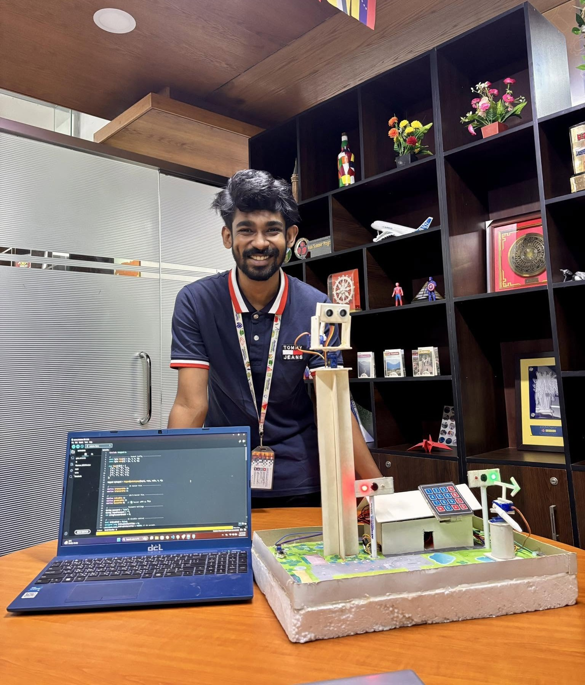

Articles & Projects / 02
Missile Tracking & Security System
A hands-on Arduino simulation connecting object detection, access control, and visual feedback.

This project brings two Arduino learning exercises into one physical demonstration: an ultrasonic sensing and servo-motion model, and a keypad-controlled security model. LEDs, a buzzer, and moving components make changes in system state visible to an observer.
Despite the project’s title, the documented build is an educational scale-model simulation. The tracking and launch effects are represented through servo movement, light, and sound. The article describes that learning prototype and its access-control demonstration.
1. Two subsystems, one demonstration
The model contains two independent Arduino sketches. One explores ultrasonic object sensing with servo movement and feedback. The other handles keypad input, infrared perimeter sensing, and simulated gate access. They share the physical display while retaining separate control logic.
Keeping the subsystems distinct makes their roles easier to explain and test. A visitor can see how the sensing model responds to an object and how the security model responds to an access attempt without treating them as a single production system.
2. Making sensor states visible
The ultrasonic subsystem connects distance readings to a small servo assembly and a sequence of demonstration states. LEDs and buzzer feedback help communicate what the controller is doing, while the Serial Monitor provides another way to observe the sketch during development.
The learning focus is the relationship between an input, a software state, and an output. The physical model makes those relationships tangible: sensing changes the controller’s state, and that change produces an observable response.
3. A simple access-control flow
The security subsystem combines a keypad with infrared sensing around the model. A correct password temporarily pauses perimeter monitoring to represent permitted entry through the gate. Monitoring returns after the access interval, while incorrect attempts produce an alarm response.
This flow demonstrates the difference between an armed state, an authorized-entry state, and an alarm state. It also creates a practical setting for handling user input and coordinating timed behavior with sensor feedback.
4. What the build brings together
The documented components include Arduino boards, an ultrasonic sensor, servos, a keypad, infrared sensors, LEDs, and a buzzer. The model building, gate, and display turn these electronic parts into a demonstration that can be understood visually.
Working with these elements involves several core embedded-system skills: reading sensor input, organizing control logic, managing state transitions, and giving users clear feedback. The project documentation includes the fuller component descriptions, diagrams, and implementation notes.
5. Further learning opportunities
The documentation proposes additions such as a local display, persistent password settings, and wireless monitoring. These would extend the user interface and configuration of the educational model.
The current build is best understood as a hands-on exploration of sensing and control. Its value lies in connecting code to physical behavior and explaining how the separate parts of an embedded prototype work together.